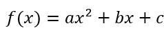

¿Qué es una función cuadrática?
Una función cuadrática es una expresión matemática que se representa de la forma:

donde:
- a,b,c son números reales y a ≠ 0.
- Su gráfica es una parábola, que puede abrirse hacia arriba o hacia abajo.
Las funciones cuadráticas aparecen con frecuencia en situaciones reales como:
- El trayecto de una pelota al ser lanzada.
- El diseño de puentes o estructuras curvas.
- Problemas de optimización, como maximizar ganancias o minimizar costos.
A continuación se presentará un video introductorio a las ecuaciones cuadráticas:
Vídeo sacado del canal de (Matemáticas profe Alex), publicado el 30 de agosto de 2017: